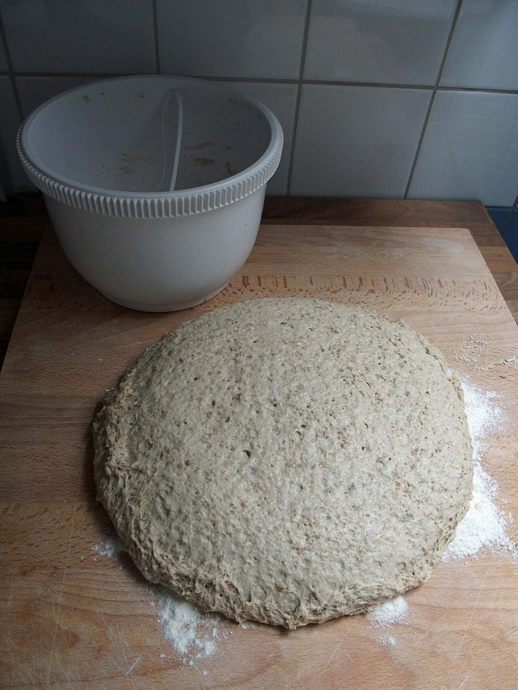
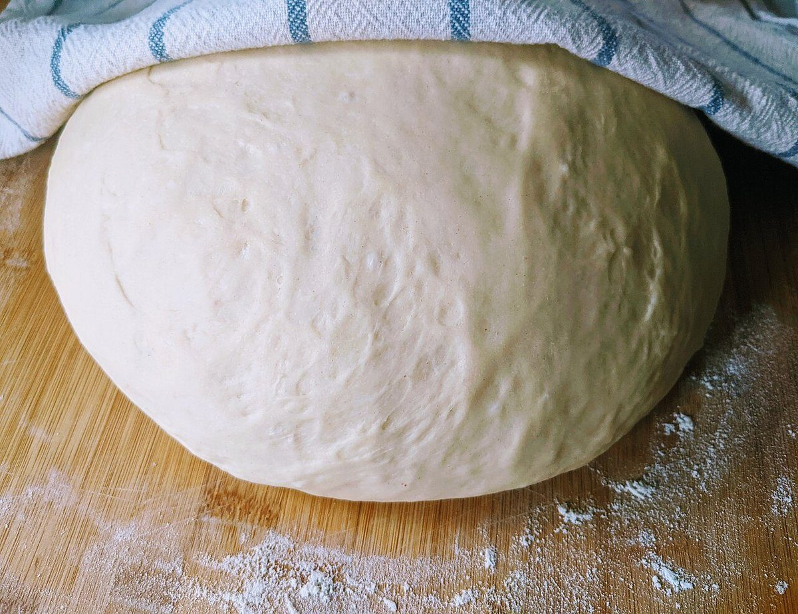

店のこと
確認できたことだけ
お店の詳しい情報はまだ準備中です。分かっているのは所在地とInstagramのみです。


この図について
室外機を六つに分ける
制作側の連想で、お店の理念・由来とは無関係です。屋号から連想した物ではなく、サイトの見せ方として「配置図」の形を借りています。実際の機種の仕様を示すものではありません。
- 1天板室外機のいちばん上をふさぐ、フラットなカバー。雨や砂ぼこりを上から受け止めます。
- 2吹出グリル丸い格子状のカバー。中のファンに手が触れないよう、風の出口をおおいます。
- 3ファン中央で回る羽根。外の空気を熱交換器に通すための風を作ります。
- 4熱交換器(フィン)薄い金属板をびっしり並べた部分。空気に熱を渡したり、受け取ったりします。
- 5配管接続口室内機とつなぐ細い管の出入口。銅色の管とバルブがまとまっています。
- 6脚(防振ゴム)本体を地面から少し浮かせて支える足。振動をやわらげるゴムを挟みます。